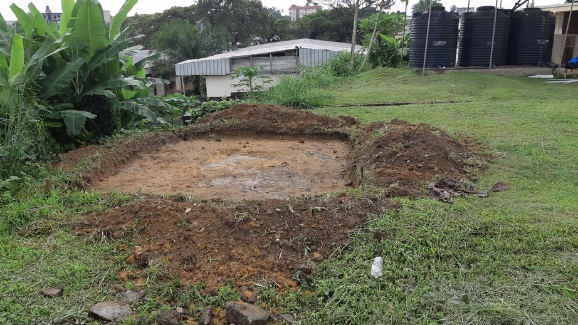

Présentation générale de RAINSMORE
RAINSMORE, pour « Raincell et Autres INnovations, Satellites et Mesure Opportunistes issues des Reseaux de telecommunication, pour Estimation et spatialisation des precipitations » est un Réseau International de Recherche (IRN) financé par l'Institut de Recherche pour le Développement (IRD).
Nos Objectifs
L'objectif de RAINSMORE est de développer et de promouvoir une approche innovante pour améliorer la surveillance des précipitations dans le monde entier, pour de nombreuses applications telles que l'hydrologie ou la surveillance du climat. .

- Promouvoir la technique Rain Cell, qui utilise le réseau de télécommunication cellulaire pour l'estimation des précipitations.
- Mener des recherches et de nombreuses activités de renforcement des capacités, avec des ateliers thématiques et de nombreux étudiants à bord
- RAINSMORE rassemble une équipe internationale, avec des spécialistes de l'hydrométéorologie et des experts en science des données ou en apprentissage profond
- L'utilisation d'enregistreurs sonores pour la détection des précipitations
Notre Mission
- Surveillance avanc√©e des pr√©cipitations üåßÔ∏è
- Analyse des tendances climatiques üìä
- D√©veloppement de solutions innovantes en hydrologie üõ∞Ô∏è
- Renforcement de la collaboration scientifique internationale ü§ù
La mission principale de RAINSMORE est d'améliorer la compréhension des phénomènes hydrologiques à travers l'utilisation de technologies avancées, notamment l'observation spatiale et les capteurs innovants.
© 2025 RAINSMORE. Tous droits r√©serv√©s.